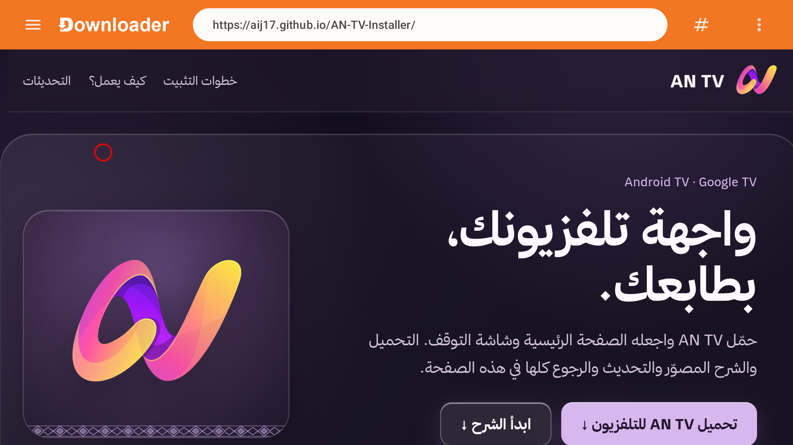
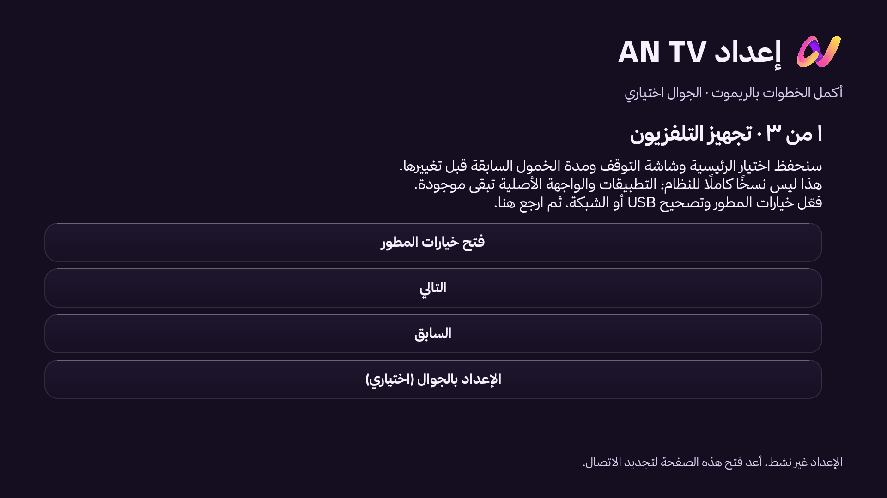
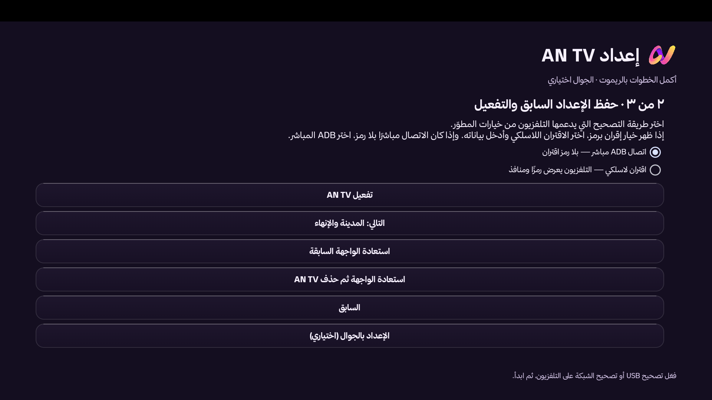
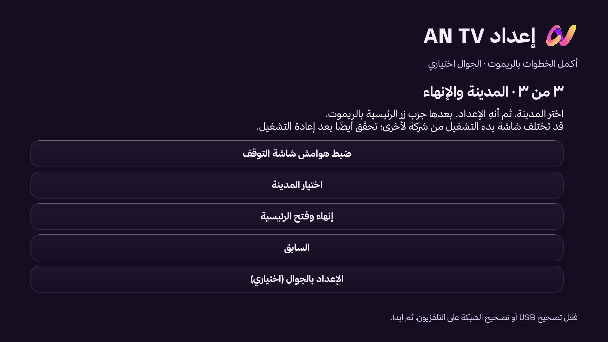
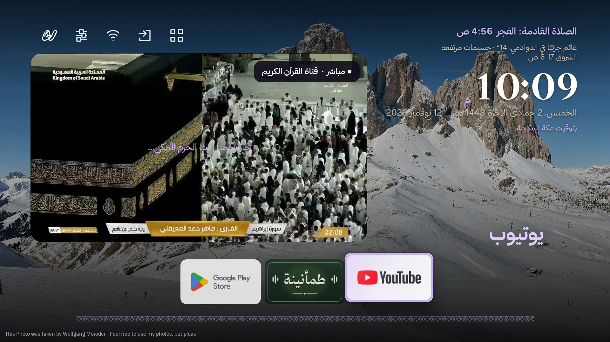
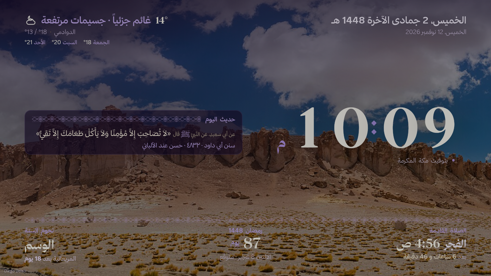

الرئيسية على مقاسك
تطبيقات مفضلة، بث حي صامت لقناة القرآن الكريم، وتوقيت الصلاة القادمة، مع اختيار المدينة من الشاشة.
حمّل AN TV واجعله الصفحة الرئيسية وشاشة التوقف. التحميل والشرح المصوّر والتحديث والرجوع كلها في هذه الصفحة.
الرابط يحمل أحدث إصدار تلقائيًا · ثبّت الملف على التلفزيون، وليس على الجوال.ابدأ من التلفزيون بتطبيق Downloader. إن تعذّر التحميل، استخدم LocalSend من الجوال.
ثبّت Downloader على التلفزيون، وافتح فيه aij17.github.io/AN-TV-Installer ثم اضغط «تحميل AN TV». بعد نزول الملف اسمح بالتثبيت وثبّت APK.
افتح AN TV واتبع معالج الإعداد. فعّل تصحيح التلفزيون عندما يطلبه، ثم اضغط «تفعيل AN TV» وانتظر رسالة نجاح ضبط الرئيسية وشاشة التوقف.
اختر المنطقة والمدينة، ثم «إنهاء وفتح الرئيسية». جرّب زر الرئيسية وأعد تشغيل التلفزيون للتأكد من استمرار الاختيار.
من متجر التلفزيون ثبّت Downloader. افتحه واكتب aij17.github.io/AN-TV-Installer، ثم افتح الصفحة واضغط «تحميل AN TV للتلفزيون». بعد نزول الملف، وافق على «السماح بالتثبيت من هذا المصدر»، ثم اختر «تثبيت».
نزّل APK على الجوال من زر التحميل أعلى هذه الصفحة، وثبّت LocalSend على الجوال والتلفزيون. وصّلهما بنفس شبكة الواي فاي، ثم أرسل الملف إلى التلفزيون وافتحه هناك. عند التحميل المباشر على التلفزيون لا تحتاج أن يكون الجوال معه على الشبكة نفسها.
افتح AN TV واضغط «فتح خيارات المطوّر». فعّل التصحيح المتاح في خيارات المطوّر على التلفزيون، ثم ارجع إلى AN TV. بعض الأجهزة تعرض «إقران برمز»، وأجهزة أخرى تتيح اتصال ADB مباشرًا بلا رمز. اختر في المعالج ما يطابق ما يظهر على تلفزيونك؛ لا تكتب أرقامًا تخمينية.
اضغط «تفعيل AN TV»، ووافق على رسالة السماح بالتصحيح إذا ظهرت. انتظر رسالة نجاح ضبط الرئيسية وشاشة التوقف قبل الانتقال للخطوة التالية. إن فشل التفعيل، اقرأ رسالة الخطأ الظاهرة في أسفل الشاشة.
اختر المنطقة والمدينة ثم «إنهاء وفتح الرئيسية». جرّب زر الرئيسية، ثم أعد تشغيل التلفزيون وتحقق من استمرار AN TV كواجهة رئيسية.




الصور توضيحية؛ قد تختلف أسماء القوائم قليلًا حسب الشركة وإصدار Android TV.


واجهة رئيسية وشاشة توقف عربية مصممة للريموت، بخط ثمانية ولمسات السدو والزجاج الخزامي.
تطبيقات مفضلة، بث حي صامت لقناة القرآن الكريم، وتوقيت الصلاة القادمة، مع اختيار المدينة من الشاشة.
ساعة وتاريخ هجري وميلادي، الطقس، المناسبة القادمة، نجوم السنة، وآية أو حديث يتبدلان يوميًا.
شريط زجاجي فوق التطبيقات عند الصلاة إذا سمح الجهاز بالظهور فوقها. اختر مؤذنًا، أذانًا كاملًا أو مقطعًا قصيرًا أو تنبيهًا صامتًا، واضبط المدة ووضوح الصوت وجرّب المعاينة من الإعدادات.
٢٢ خلفية محفوظة تعمل دون إنترنت، وصور جديدة عند الاتصال، مع اسم المصور. يتيح التطبيق تحديث نفسه واستعادة اختيار الواجهة السابقة.
تجد هذه القائمة أيضًا داخل التلفزيون: إعدادات AN TV ← مصادر AN TV. ولرابط كل صورة على حدة: مصادر الصور.
خدمة تقويم أم القرى الرسمية عبر مدينة الملك عبدالعزيز للعلوم والتقنية؛ حساب محلي عند انقطاع الاتصال.
تواريخ المناسبات وجدول النجوم من موقع دُنُوّ. تُحفظ نسخة للعمل دون إنترنت.
نص القرآن و«التفسير الميسر» عبر api.alquran.cloud؛ آيات مختارة محفوظة داخل التطبيق مع اسم السورة ورقم الآية.
مجموعة أحاديث موثقة من الكتب الستة باستخدام Hadith API؛ يظهر مصدر الحديث معه.
حالة الطقس من Open-Meteo، والغبار من متغير dust في خدمة جودة الهواء. الجسيمات PM10 تُعرض منفصلة؛ هذه تقديرات نموذج وليست رصدًا مباشرًا. لم يُربط المركز الوطني للأرصاد لأن واجهته تحتاج حساب وصول معتمدًا.
٢٢ صورة محفوظة من Google Chromecast، وصور طبيعة وحيوانات متجددة من Wikimedia Commons. يعرض AN TV المصور، وفي الإعدادات رابط كل صورة محفوظة أو حالية.
معاينة قناة القرآن الكريم السعودية، وفتح بثها المباشر عند الاختيار. التلاوات من mp3quran.net وتسجيلات الأذان من Archive.org ومصادرها الموثقة.
قائمة مناطق ومدن سعودية داخل التطبيق؛ البحث الإضافي يستخدم Open-Meteo Geocoding.
بعد نجاح التفعيل يفتح زر الرئيسية واجهة AN TV، وتظهر شاشة توقفه عند الخمول. تثبيت APK وحده يضعه ضمن التطبيقات فقط؛ أكمل خطوة «تفعيل AN TV».
يعمل AN TV فوق Android TV أو Google TV ويستخدم تطبيقاته وإعداداته. يحفظ المعالج اختيار الواجهة وشاشة التوقف السابقين لاستعادتهما عند الإزالة. لا ينشئ نسخة كاملة من نظام الشركة.
تعمل هذه الحزمة على Android TV وGoogle TV. بعض الأجهزة تمنع تغيير الواجهة؛ لا يوجد ملف واحد يبدّل نظام كل تلفزيون.
يفحص AN TV وجود إصدار جديد مرة كل يوم عند فتح الرئيسية. للفحص فورًا: «إعدادات AN TV ← تحديث AN TV». وافق على تثبيت أندرويد إذا طلب ذلك. تبقى إعدادات AN TV بعد التحديث.
من معالج AN TV اختر «استعادة الواجهة السابقة» قبل إزالة التطبيق. تعود الرئيسية وشاشة التوقف المحفوظتان، ثم يمكنك حذف AN TV من إعدادات التطبيقات.